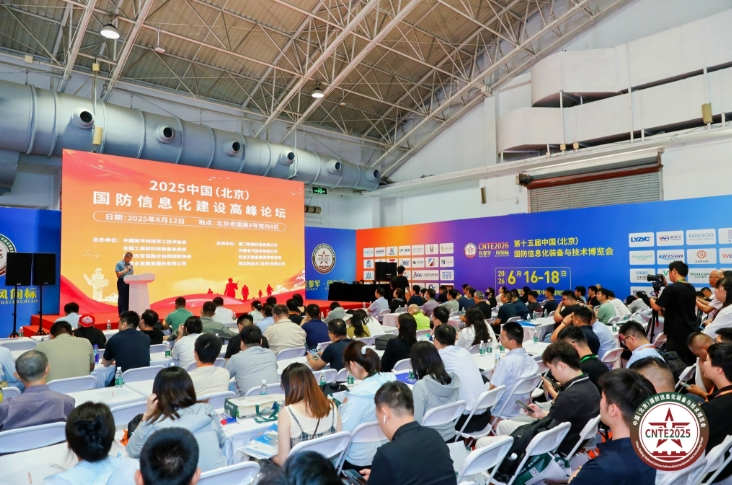
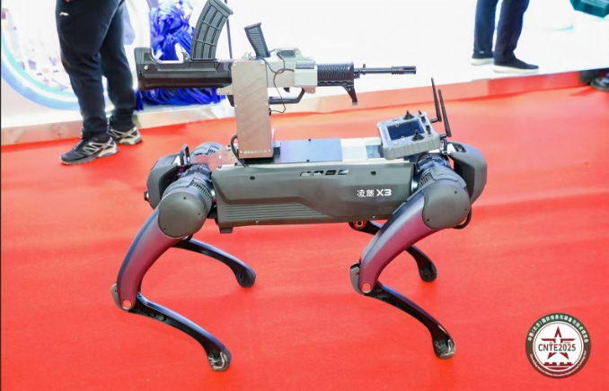

在时代科技浪潮的澎湃推动下，国防科技领域正以前所未有的速度迈向全新高度。6月12日，我国国防科技工业领域规模最大的行业展盛大开启，宛如一座汇聚前沿科技的璀璨灯塔，吸引着全球目光。

踏入展会现场，仿若置身于未来国防的梦幻蓝图之中，各类先进装备与创新技术琳琅满目。从具备超强隐身性能与卓越机动能力，代表着制空权争夺新方向的新型战机模型，到深海之下，运用前沿材料与动力技术，可实现长时间潜伏与精准打击的先进潜艇模拟展示，无一不彰显着我国国防科技在海陆空全方位的深度探索与重大突破。
规模最大、层次最高、专业性最强
在人工智能、大数据、量子通信等新兴技术赋能下的信息化作战系统展示区，更是人流如织，这些系统将大幅提升作战指挥的高效性与精准度，成为未来战场的核心优势。这场行业展，正以其无与伦比的规模与震撼人心的前沿科技成果，生动诠释着我国国防科技工业的蓬勃发展态势与无限潜力。
据悉，作为我国国防科技工业领域规模最大、层次最高、专业性最强的行业盛会，已成功举办13届。本届展会由中国和平利用军工技术协会、全国工商联科技装备业商会、北京市军民融合协同创新协会等单位主办，北京企发展览服务有限公司承办，以“搭建供需对接平台·促进军民科技发展”为主题，深度聚焦国防信息化技术突破与军民科技产业创新，全面展示我国国防信息化领域的最新成果与技术突破。展会汇聚国防科技装备上下游高新技术企业1000余家，展会规模40000平方米，预计将有来自军队、武警、边防、航空航天、低空、兵器、核电、十大军工集团、融办、信息通信、科研院校以及装备制造配套企业等专业观众超35000人次，这场盛会必将为国防科技工业领域带来新的发展机遇与活力。
全域技术赋能，引领行业新风向
此次展会匠心独运，精心规划并打造了多个兼具前瞻视野与专业深度的专题展区。特设军事信息通信技术装备展区、特种电子元器件展区，3D打印及增材制造展区、国防绿色数据中心展区、智能安防及无人装备展区、军工智能制造装备展区、军事后勤装备展区、军事卫勤装备展区、军警反恐装备展区等，全方位、多角度地展现了国防信息化全产业链蓬勃发展的崭新风貌、显著跨越与辉煌成就，为业内人士搭建了一个广阔而高效的交流合作平台。
头部企业云集，黑科技产品首发
群英荟萃，亮点纷呈。展会汇聚了近1000余家参展商。自主可控的军用芯片、信息网络安全与储存系统、高精度雷达系统、智能化无人作战平台等，尽显央国企在国防科技领域的深厚底蕴与强大实力。与此同时，多家民营高科技企业也在这场盛会中大放异彩。首次展示具有自主知识产权的“黑科技”产品，例如量子通信设备、人工智能指挥系统等创新成果，彰显了我国国防信息化科技工业蓬勃的创新活力，为观众带来一场国防信息化科技装备的视觉盛宴。

权威解析，共探国防信息新途径
展会期间，三大主题论坛“中国（北京）国防信息化建设高峰论坛”“中国（北京）军民两用新材料产业发展高峰论坛”以及“中国（北京）国防军工装备配套合作发展论坛”同步盛大开启。届时，来自军队、武警、航空航天、科研院校、军工研究所及军工集团的精英们将齐聚一堂，围绕新时代国防现代化建设的迫切需求、军民科技协同化深度发展战略的落地实施，以及国防科技自主创新方向的探索突破等核心议题展开深度研讨。在这场思想与智慧的盛宴中，大家将共同领略国防信息化科技的磅礴力量，感受科技创新为国防事业带来的巨大变革。
专客精准对接，采购需求齐迸发
展会将军队采购部门、军工集团、科研院所与民营企业紧密相连，通过线上预约、线下洽谈的高效模式，为各方创造了充分交流、深入探讨的契机，有力地推动了技术合作与采购意向的精准匹配与高效落地。回溯往届展会，成果斐然，已成功促成逾千项技术合作，充分彰显了展会在促进军民科技深度合作、加速产业发展进程中的卓越效能与强大推动力。
作为我国国防科技工业领域唯一国家级展会，国防信息化装备展自2012年创办以来，始终服务于国家战略需求，累计吸引超30万专业观众纷至沓来、上万家企业踊跃参展，成为推动国防现代化建设与军民科技深度发展的重要引擎。本届展会将继续秉持初心，立足北京、辐射全国、走向世界。进一步强化“军地协同、产研对接”定位，通过“展览+论坛+对接会”三维模式，加速国防信息化科技成果向实战能力转化。随着全球军事智能化竞争加剧，展会不仅承载着展示中国国防科技实力的使命，更将成为推动全球国防工业创新生态构建的重要力量。(本文图片由主办方提供)